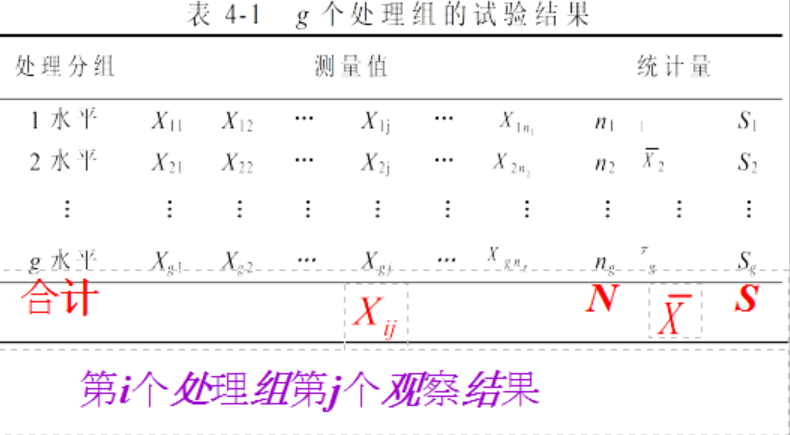
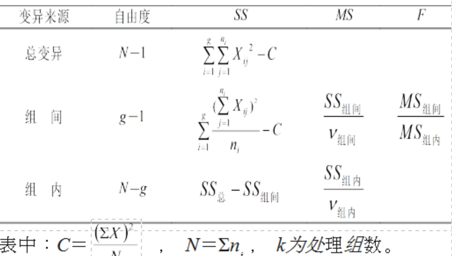
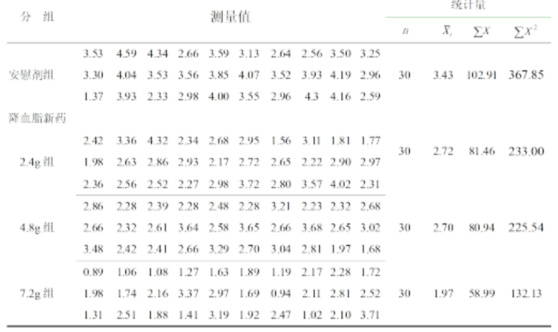
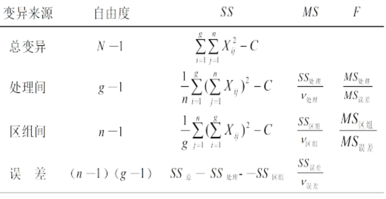
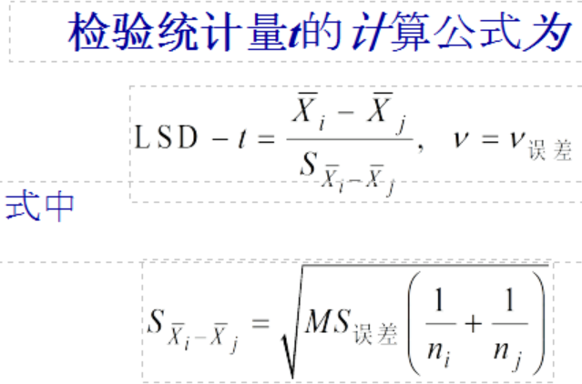
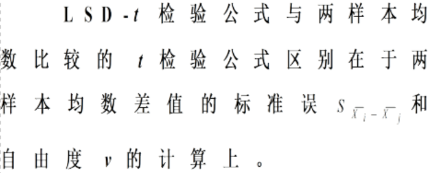

又称 ANOVA
完全随机设计资料的方差分析
随机区组设计资料的方差分析
多个样本均数间的多重比较
1.掌握方差分析的应用条件；
2.理解方差分析的基本思想；
3.熟悉完全随机设计的多个样本均数比较方差分析；
4.熟悉随机区组设计的多个样本均数比较方差分析；
5.了解多个样本均数的两两比较的检验方法；
| 表头 | 方差分析可以用于 |
|---|---|
| 1 | 用于两个或多个样本均数的比较 |
| 2 | 两个或多个研究因素的交互作用 |
| 3 | 回归方程的线性假设检验 |
| 4 | 方差齐性检验 |
|易混淆的应用情景|应选用的应用方法|在多个均数的比较中的优势|劣势| |—-|—-| |两个均数的比较|t检验，u检验|检验次数增多，易犯一类错误|计算简单| |多个均数的比较|方差分析|检验次数不增多，不易犯一类错误|计算复杂|
什么是方差-方差的计算公式
总体方差：=∑[(x-μ)^2]/N
样本方差：S^2=∑[(x-x拔）^2]/n-1
∑(x-x拔）^2=∑x^2-(∑x)^2/n,记为(∑x^2)-C
故C=(∑x)^2/n
方差分析的基本思想及其应用条件
也可用于两个
基本思想：根据试验设计的类型，将全部测量值总的离均差平方和及其自由度分解为两个或多个部分，除随机误差作用外，每个部分的变异可由某个因素的作用(或某几个因素的交互作用)加以解释 。
应用条件：
总体——正态且方差相等
样本——独立、随机
设计类型：
完全随机设计资料的方差分析
随机区组设计资料的方差分析
出题的表长这个样子：

自学：完全随机分组方法。

| SS类型 | 对应自由度 |
|---|---|
| 总的 | N-1 |
| 组间 | k-1 |
| 组内 | (N-1)-(k-1)=N-k |
👇F =（不同处理所致的变异+随机误差引起的变异）/随机误差引起的变异
假如处理对研究因素无影响（即处理因素不起作用），则在理论上，F=1。由于抽样误差的影响，F值往往并不恰好等于1，而是近于1。反之，若处理确实有影响，组间变异就会增大，F值将明显大于1。要大到多少才有统计学意义呢？可查F界值表，得P值，按P值的大小作出推断结论。
接下来嗯算√

如果有闲心，对g=2的样本，既采用了t检验又采用了方差分析，会发现t=√F，说明当g=2时，完全随机设计方差分析与成组设计资料的t 检验等价。
方差分析的结果拒绝H0，接受H1，不能说明各组总体均数间两两都有差别。如果要分析哪些两组间有差别，可进行多个均数间的多重比较。
先按影响试验结果的非处理因素（如性别、体重、年龄、职业、病情、病程等）将受试对象配成区组，再分别将各区组内的受试对象随机分配到各处理或对照组。
随机分配的次数要重复多次，每次随机分配都对同一个区组内的受试对象进行，且各个处理组受试对象数量相同，区组内均衡。
在进行统计分析时，将区组变异离均差平方和从完全随机设计的组内离均差平和中分离出来，从而减小组内离均差平方和（误差平方和），提高了统计检验效率。
不满足方差分析正态分布且方差齐同的资料的条件时，可以对数据变换或采用Friedman M检验。如果满足正态分布方差齐的资料，就可以单因素方差分析的双向分类方差分析（即：随机区组设计资料的方差分析表）或（实验组和对照组各有1个时）配对t检验（上一章，我们学习新知识，已经学会的就不去纠结了）。
接下来嗯算√

注意事项同前。
随机区组设计确定区组应是对试验结果有影响的非处理因素。区组内各试验对象应均衡，区组之间试验对象具有较大的差异为好，这样利用区组控制非处理因素的影响，并在方差分析时将区组间的变异从组内变异中分解出来。
因此，当区组间差别有统计学意义时，这种设计的误差比完全随机设计小，试验效率得以提高。
多重比较不能用两样本均数比较的 t 检验！
若用两样本均数比较的 t 检验进行多重比较，将会加大犯Ⅰ类错误（把本无差别的两个总体均数判为有差别）的概率。
当方差分析的结果为拒绝H0，接受H1时，只说明g个总体均数不全相等。若想进一步了解哪些两个总体均数不等，需进行多个样本均数间的两两比较或称多重比较。
SPSS LSD-t检验,一对或几对在专业上有特殊意义的样本均数间的比较。
尽管考试没有要求记下图公式，我仍然放出来了，接下来嗯算√

注意什么的

g-1个实验组与一个对照组均数差别的多重比较，检验统计量Dunnett-t 有专门的界值表(附表5) 。
适用于多个样本均数两两之间的全面比较。这次查q界值表。
仅作了解。本节介绍多样本（也适用于两样本）方差齐性检验的Bartlett检验法和Levene检验法。
习题系列：
下一章方差分析的基本思想是
A 组间均方大于组内均方
B 组内均方大于组间均方
C 不同来源的方差必须相等
D 两方差之比服从F分布
E 总变异及其自由度可按不同来源分解
方差分析的应用条件之一是方差齐性，它是指
A 各比较组相应的样本方差相等
B 各比较组相应的总体方差相等
C 组内方差=组间方差
D 总方差=各组方差之和
E 总方差=组内方差组间方差
完全随机设计方差分析中的组间均方反映的是
A 随机测量误差大小
B 某因素效应大小
C 处理因素效应与随机误差综合结果
D 全部数据的离散度
E 各组方差的平均水平
完全随机设计资料的多个样本均数的比较，若处理无作用，则方差分析的F值在理论上应接近于
A Fα(ν1,ν2)
B SS处理/SS误差
C 0
D 1
E 任意值
对于两组资料的比较 , 方差分析与t检验的关系是
A t检验结果更准确
B 方差分析结果更准确
C t检验对数据的要求更为严格
D 近似等价
E 完全等价
完全随机设计的多个样本均数比较，经方差分析，如果P<0.05，则结论为
A 各样本均数全相等
B 各样本均数全不相等
C 至少有两个样本均数不等
D 至少有两个总体均数不等
E 各总体均数全相等
多组均数比较的方差分析 , 如果P<0.05 , 则应该进一步做的是
A 两均数的t检验
B 区组方差分析
C 方差齐性检验
D SNK-q检验
E 确定单独效应i
对于多个方差的齐性检验，若P<α，可认为
A 多个样本方差全不相等
B 多个总体方差全不相等
C 多个样本方差不全相等
D 对于多个方差的齐性检验，若P<α，可认为
E 多个总体方差相等